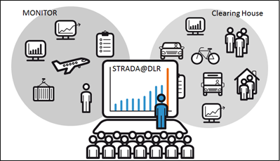

Instituto para la Investigación del Transporte (VF)
Investiga los avances y perspectivas del transporte de pasajeros y comercial para conseguir en el futuro un sistema de transporte moderno, eficiente y sostenible para las personas y el medio ambiente.
Portal unificado que engloba los datos provenientes de "Clearingstellen Verkehr" y "MONITOR-Portal"

KnowledgeFinder (2010-2013)
Framework de búsqueda para portales del conocimiento cuya finalidad
principal es la recuperación de la información y del concimiento
de una forma simple e intuitiva.
Situación de Partida
Sólo es posible una fuente de datos
Interfaz de usuario y búsqueda sólo centrada en el texto
Implementado usando Vaadin 6
Índice de búsqueda Lucene 3.0.2
Portal Liferay 6.1.1
Configuración a nivel de código
KnowledgeFinder II
Mejora de la visualización conocimiento y de las estructuras y relaciones de los datos
Participación de nuevas fuentes de datos en el DLR relacionadas con el "Transporte y la Movilidad"
Elección de la Visualización
Buscar la estructura visual que represente con más fidelidad el conocimiento y las
estructuras complejas y que sea intuitivo para el usuario.
Chord Diagram
Bubble Chart
Circle Packing
Grafo - Force Layout
Tecnología de Visualización
D3.js (Data-Driven Documents)
Biblioteca Open Source de JavaScript para la manipulación de documentos basados en datos (HTML5).
Claridad y calidad del código. Extensa documentación y ejemplos ilustrativos.
Facilidad de adaptación a las actuales y futuras necesidades específicas de KnowledgeFinder II.
Leaflet con D3.js
Índice de Búsqueda
Apache Solr 4.8
Unificación de Lucene y Solr en marzo de 2010.
Configuración basada en ficheros XML.
Opciones más potentes de búsqueda.
Optimizado para gran volumen de peticiones.
Tipo de Aplicación
Modelo Vista Controlador (MVC)
Costosa y necesaria actualización de Vaadin 6 → 7
Difícil incorporación de los elementos de D3.js en Vaadin.
Flexibilidad de MVC
D3.js y los recursos externos (JSON, XML, CSV, ...)
Interfaz de usuario intuitiva, dinámica e interactiva donde se
representan las estructuras de datos complejas del conocimiento.
La visualización aparece como el elemento principal de la búsqueda pero sin
menospreciar las posibilidades a través del menú y búsqueda de texto.
Todos los componentes de la
interfaz interactúan entre ellos y proporciona al usuario información instantánea de las
relaciones y estructuras de los documentos.
Objetivos Alcanzados (2)
Adaptación a nuevas Fuentes de Datos
Incorporación de nuevas fuentes de datos (locales y remotas) al índice de búsqueda
simplemente modificando la configuración.
Resto de la aplicación adaptable a través de ficheros de configuración.
Mejoras Transversales
Mejora del código: de 424 ficheros (Java) y 67.565 líneas de código
a 89 ficheros de código (Java, JavaScript, Sass) y 11.856 líneas de código.
Mejora del Rendimiento: Importación de 25 minutos a 30 segundos.
Mejor respuesta de la interfaz de usuario.
Sistema más flexible: Gracias al MVC, el sistema es más adaptable a posibles
cambios.
Lecciones Aprendidas
Gran experiencia en el DLR
La burocracia; enemiga y amiga
Buenos razomanientos ayudan a convencer
Solr - JavaScript (D3.js) - HMTL5 - Sass
Trabajo futuro
Importación de nuevas fuentes de datos
Importación de otros formatos (XML, CSV, ...)
Adaptación a nuevos tipos de datos
Nuevos componentes para la visualización
Búsqueda semántica
Linked Data
Bibliografía Principal
Dr. Peter Hruschka Dr. Gernot Starke. Softwarearchitektur arc42, (2014)
DLR Institute for Transport Research. Using Dublin Core Standard for the metadata
description of transport statistics (2013)
Institut für Flughafenwesen und Luftverkehr (FW). http://www.dlr.de/fw/, (2014)
Institut für Verkehrsforschung (VF). http://www.dlr.de/vf/, (2014)
Magnus Penker, Hans-Erik Eriksson. Business modeling with uml : Business
patterns at work, (2000)